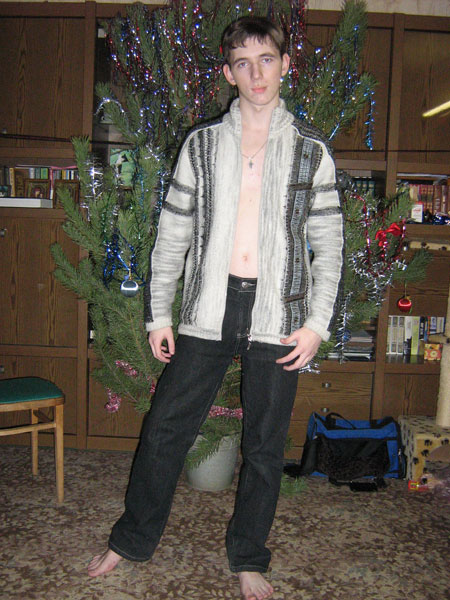

Это реконструированный сайт topw3.narod.ru | Харьков 2005-2007


интервью с nGt.Inpost
Он не вызывает ужаса у своих соперников на чемпионатах, но знают его все. Он не входит даже в топ-20 Украины, но дважды ездил на финал WCG:UA. Итак встречайте, один из самых неоднозначных war3 игроков Украины- nGt.Inpost
